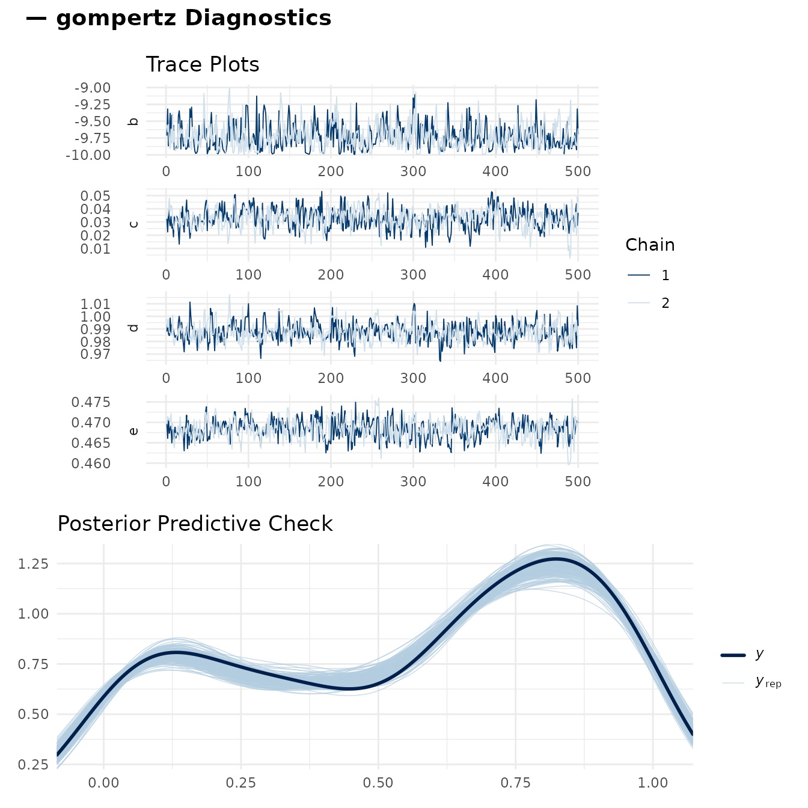
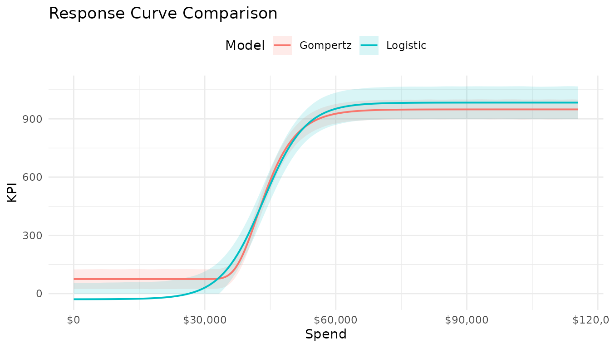
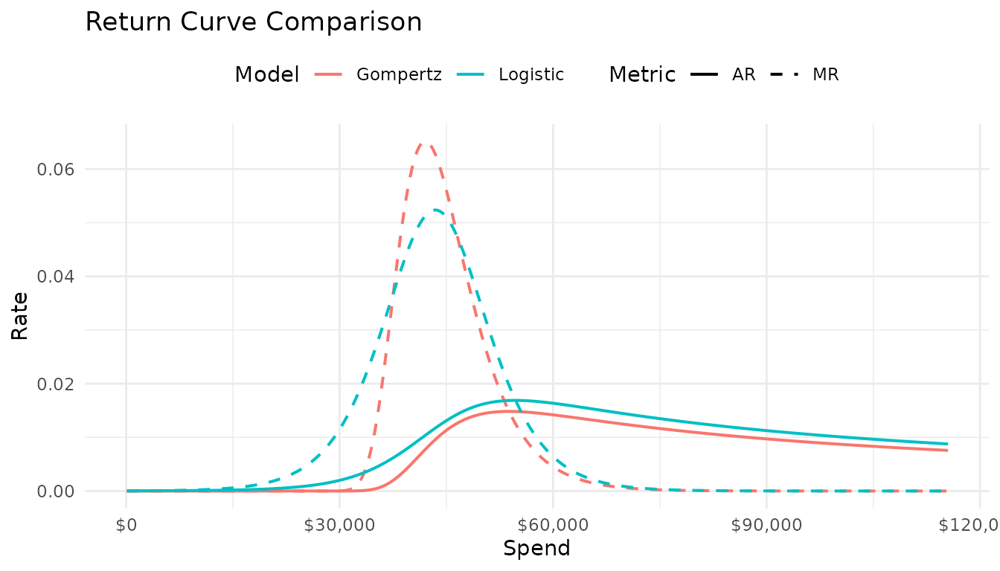
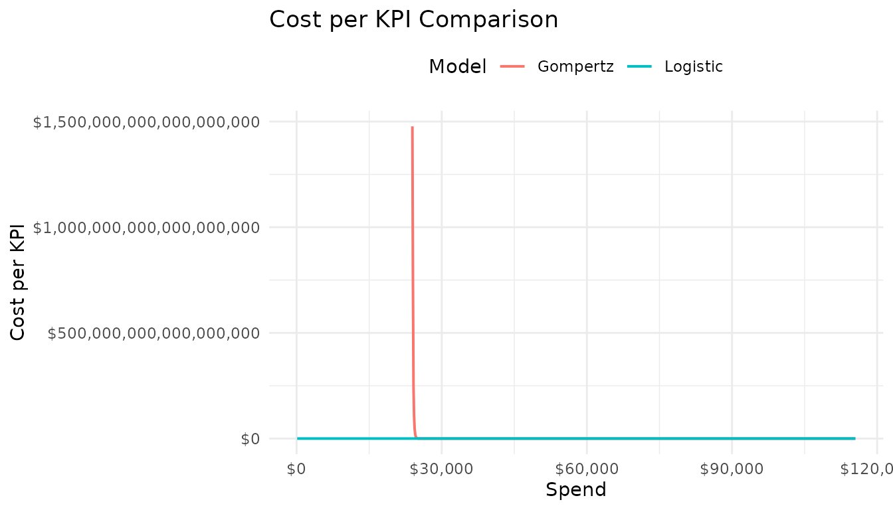
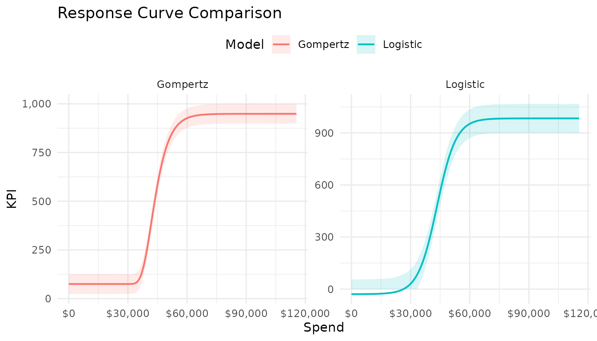

Model Diagnostics and Curve Comparison
diagnostics_and_comparison.RmdOverview
After fitting a response curve model there are two questions to answer before acting on the results:
- Did the sampler converge? Bayesian inference via MCMC can fail silently — the sampler may return estimates even when the chains have not mixed properly. Diagnostics catch this.
- Is this the right curve shape for the data? With six curve families available, it is worth checking whether the chosen type fits better or worse than alternatives.
This vignette covers both. It assumes you have worked through the Fitting and Analyzing Response Curve Models vignette and have a fitted model in hand.
Setup: Fitting Two Curve Types
We fit both a Gompertz and a
Logistic curve to the Paid Search channel from
mrmopt_data. This gives us a concrete comparison pair for
the second half of the vignette.
data(mrmopt_data)
paid_search <- mrmopt_data |> filter(channel == "Paid Search")
fit_gompertz <- fit_response(
data = paid_search,
spend = "spend",
kpi = "conversions",
date = "week",
type = "gompertz",
chains = 2,
iter = 1000,
warmup = 500,
seed = 8214
)
fit_logistic <- fit_response(
data = paid_search,
spend = "spend",
kpi = "conversions",
date = "week",
type = "logistic",
chains = 2,
iter = 1000,
warmup = 500,
seed = 3907
)Part 1: MCMC Diagnostics
Why Diagnostics Matter
MCMC samplers like Stan’s No-U-Turn Sampler (NUTS) explore the posterior distribution by simulating correlated random walks across the parameter space. When the posterior is well-behaved and the model is identifiable, multiple independent chains will converge on the same region and mix freely. When they do not, parameter estimates and credible intervals cannot be trusted regardless of how plausible they look.
Nonlinear models with informative priors are generally well-behaved, but poorly specified priors or insufficient data can produce pathological posteriors. Running diagnostics after every fit is a good habit.
The Diagnostics Plot
mrm_plot_diagnostics(fit) shows two panels: trace plots
for the four parameters and a posterior predictive check.
mrm_plot_diagnostics(fit_gompertz)
Diagnostics for the Gompertz fit. Trace plots (top) show chain mixing across b, c, d, e. The PPC (bottom) overlays observed data against 200 posterior predictive draws.
Reading Trace Plots
Each trace plot shows the sampled parameter value at every post-warmup iteration, coloured by chain. A well-converged model shows:
- Good mixing: chains interleave freely with one another — no chain stays consistently above or below the others.
- Stationarity: the traces fluctuate around a stable central value without drifting upward or downward over iterations.
- Similar variance: all chains explore roughly the same range.
Warning signs to look for:
- Stuck chains: one chain sits at a very different value from the others for extended stretches.
- Funnel geometry: one chain has much lower variance than the others, suggesting it is trapped in a narrow region of the posterior.
- Drift or trend: a slow upward or downward movement suggests the chain has not reached stationarity.
If any of these appear, try increasing adapt_delta
(e.g., control = list(adapt_delta = 0.99)), tightening
priors, or increasing the number of warmup iterations.
R-hat and ESS
The trace plot gives a visual impression; two numerical summaries give a formal verdict.
R-hat (the potential scale reduction factor) measures convergence by comparing within-chain variance to between-chain variance. When chains have mixed well, these are equal and R-hat ≈ 1. Values above 1.01 are a warning sign; above 1.05 indicate a convergence problem.
ESS (effective sample size) measures how many independent samples the chains are worth, accounting for autocorrelation. Low ESS means the posterior estimate is based on fewer independent draws than the nominal sample count. As a rough rule of thumb, aim for ESS > 400 for reliable estimates.
Both are extracted from the brms summary:
posterior_summary <- summary(fit_gompertz)$fixed
posterior_summary[grepl("b_Intercept|c_Intercept|d_Intercept|e_Intercept",
rownames(posterior_summary)),
c("Estimate", "l-95% CI", "u-95% CI", "Rhat", "Bulk_ESS", "Tail_ESS")]
#> Estimate l-95% CI u-95% CI Rhat Bulk_ESS Tail_ESS
#> b_Intercept -9.72677503 -9.98469592 -9.26670047 1.0013748 445.6743 414.6111
#> c_Intercept 0.03258653 0.01745291 0.04691426 1.0011534 408.1136 418.1169
#> d_Intercept 0.98760217 0.97435875 1.00395149 0.9997084 525.0035 518.4115
#> e_Intercept 0.46834456 0.46362654 0.47274918 1.0027166 427.9659 548.6615Healthy values have Rhat ≤ 1.01 and ESS well above 400 for both bulk and tail. Tail ESS is particularly important for credible interval accuracy — the 2.5th and 97.5th percentiles are estimated from fewer effective draws than the mean.
To inspect the full brms convergence output:
brms::summary(fit_gompertz)Posterior Predictive Check
The PPC panel overlays the observed KPI distribution (dark line) against 200 replicated datasets drawn from the posterior (light lines). The question it answers is: could the model have generated data like what we observed?
A well-calibrated model produces replicated datasets that span the observed distribution. Warning signs:
- Mode mismatch: the observed peak falls in the tail of the replicated distributions — the model consistently predicts too high or too low.
- Width mismatch: replicated datasets are systematically narrower or wider than observed — the model is overconfident or underconfident about the KPI variance.
- Skew mismatch: replicated distributions have a different skew than the observed data.
For a standalone PPC with more draws:
brms::pp_check(fit_gompertz, ndraws = 400)A good PPC does not prove the model is correct — it only shows it is not obviously wrong. Models can pass a PPC while still being misspecified in ways that matter for extrapolation or range analysis.
Part 2: Bayes R²
Bayes R² estimates the proportion of KPI variance explained by the model, derived from posterior predictive draws rather than a single point estimate. This gives it a natural credible interval rather than a single number.
fit_gompertz$R2
#> # A tibble: 1 × 4
#> Estimate Est.Error Q2.5 Q97.5
#> <dbl> <dbl> <dbl> <dbl>
#> 1 0.993 0.000216 0.992 0.993Interpretation guidelines:
- High R² with tight interval: the model fits well and the uncertainty about fit quality is low.
- High R² with wide interval: the model fits well on average but the credible interval reflects uncertainty — possibly because the posterior has high variance in the saturated region.
- Low R²: the model explains little variance. Check whether the data have sufficient spend variation and whether the curve type is appropriate.
R² alone should not drive curve selection — two curve types can have similar R² while making very different predictions in unobserved spend regions. Use R² alongside visual model comparison.
Part 3: Comparing Curve Types
When to Compare
After verifying that a model has converged, the natural next question is whether a different curve type would fit the data better or produce more defensible predictions. The most common comparisons are:
- Gompertz vs. Logistic for digital channels: the Gompertz’s early inflection often fits performance media well; the Logistic’s symmetry can be more appropriate when saturation is gradual.
- Logistic vs. Log-Logistic when unsure whether the response operates on a linear or proportional spend scale.
- Gompertz vs. Reflected Gompertz when the data suggest a slow early ramp rather than a quick one.
Overlaying Response Curves
mrms_plot_compare() takes a named list of fitted models
and overlays their response curves, return curves, or cost-per curves on
a single axis. Names are used as legend labels.
mrms_plot_compare(
models = list(Gompertz = fit_gompertz, Logistic = fit_logistic),
plot_type = "response"
)
Gompertz and Logistic response curves overlaid on the same axis. Both fit the observed spend range well; they diverge in the extrapolated region above ~$70k.
The region where the two curves agree — broadly, within the observed spend range — is the region where the data inform the model. The region where they diverge is where curve choice matters most for planning and optimization.
Comparing Returns
The return comparison is often more revealing than the response comparison, because it directly shows how each model characterises the efficiency of incremental spend.
mrms_plot_compare(
models = list(Gompertz = fit_gompertz, Logistic = fit_logistic),
plot_type = "return"
)
AR and MR curves for both models. The Gompertz’s earlier inflection gives it a higher marginal return peak at lower spend; the Logistic’s symmetric shape keeps MR higher for longer.
Two things to look for here:
- Peak MR location: does one model place peak efficiency at a substantially different spend level? If so, the models would give different investment recommendations.
- Decay rate: how quickly does MR fall as spend increases? A steeper decay justifies tighter spend caps in optimization.
Comparing Cost Per KPI
The cost-per comparison is the most operationally interpretable view. It directly shows the financial cost of delivering a conversion at each spend level.
mrms_plot_compare(
models = list(Gompertz = fit_gompertz, Logistic = fit_logistic),
plot_type = "costper"
)
Cost per conversion curves for both models. Agreement in the observed range gives confidence that either model would support similar spend recommendations.
Faceted Layout
When comparing more than two models or when the curves are too close
to distinguish on a single axis, use layout = "facet":
mrms_plot_compare(
models = list(Gompertz = fit_gompertz, Logistic = fit_logistic),
plot_type = "response",
layout = "facet"
)
Faceted comparison gives each model its own panel, making the individual shapes easier to read.
Comparing R² Across Models
Bayes R² provides a single-number summary of relative fit quality. When comparing multiple fitted models, collect R² values into a table:
list(Gompertz = fit_gompertz, Logistic = fit_logistic) |>
map_dfr(~ as.data.frame(.x$R2), .id = "model") |>
select(model, Estimate, Est.Error, Q2.5, Q97.5) |>
arrange(desc(Estimate))
#> model Estimate Est.Error Q2.5 Q97.5
#> 1 Gompertz 0.9929706 0.0002164212 0.9923802 0.9932071
#> 2 Logistic 0.9806867 0.0008769886 0.9785144 0.9817294A model with meaningfully higher R² and a credible interval that does not overlap the competitor’s is a clear winner on in-sample fit. When intervals overlap substantially, R² does not discriminate between the models — visual comparison of curves and PPCs should carry more weight.
Comparing Summary Ranges
The curve comparison plots reveal shape differences; the summary
range table reveals whether those differences translate into materially
different spend recommendations. If both models suggest similar
range_min and range_max values, the practical
implications of choosing one over the other are small.
bind_rows(
fit_gompertz$summary |> mutate(model = "Gompertz"),
fit_logistic$summary |> mutate(model = "Logistic")
) |>
select(model, range_min_spend, range_peak_spend, range_max_spend,
range_min_mr, range_peak_mr, range_max_mr)
#> # A tibble: 2 × 7
#> model range_min_spend range_peak_spend range_max_spend range_min_mr
#> <chr> <dbl> <dbl> <dbl> <dbl>
#> 1 Gompertz 41976. 53797. 46877. 0.0651
#> 2 Logistic 43417. 54758. 49472. 0.0524
#> # ℹ 2 more variables: range_peak_mr <dbl>, range_max_mr <dbl>Part 4: Comparing Across Channels
mrms_plot_compare() is not limited to same-channel
comparisons. Passing models from different channels produces a
side-by-side view of how the portfolio’s response profiles compare —
useful for identifying which channels are most and least saturated
relative to current spend levels.
The example below is eval = FALSE since it requires
fitting all five channels; see the Fitting and Analyzing Response
Curve Models vignette for the fitting loop.
# fits is the named list from the fitting vignette
mrms_plot_compare(fits, plot_type = "return", layout = "facet")When channels operate at very different spend scales,
layout = "facet" with scales = "free_y" (the
default in faceted mode) ensures each panel uses an appropriate axis
range rather than a shared one distorted by the highest-spend
channel.
Decision Framework
Before moving to optimization, a model should pass each of the following checks:
| Check | Tool | Pass criterion |
|---|---|---|
| Chain convergence | Trace plots | Chains mix freely, no stuck or drifting chains |
| Numerical convergence | R-hat | All parameters Rhat ≤ 1.01 |
| Sufficient sampling | ESS | Bulk and Tail ESS > 400 for all parameters |
| Predictive calibration | PPC | Replicated distributions span observed data |
| Model fit | Bayes R² | R² meaningfully above baseline; CI not spanning 0 |
| Curve selection | mrms_plot_compare() |
Chosen type fits as well as alternatives in observed range; sensible extrapolation |
A model that passes all six checks can be used with confidence in downstream analysis. A model that fails the first four (MCMC-related) checks should be re-fitted before its results are interpreted at all — the parameter estimates themselves are unreliable.
A note on model selection and overfitting
Comparing multiple curve types on the same data and selecting the best-fitting one introduces a mild form of model selection bias. The selected model will tend to have higher in-sample R² than its true out-of-sample performance. For most practical media planning purposes this is acceptable — the curves are constrained by their parametric form and are unlikely to severely overfit 100+ observations. But it is worth keeping in mind when interpreting R² for a selected model.